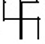

我认识一个医生，忙的，但也常受病家的攻击，有一回，自解自叹道：要得称赞，最好是杀人，你把拿破仑[278]和隋那（Edward Jenner，1749—1823）[279]去比比看……
我想，这是真的。拿破仑的战绩，和我们什么相干呢，我们却总敬服他的英雄。甚而至于自己的祖宗做了蒙古人的奴隶，我们却还恭维成吉思；从现在的

[280]字眼睛看来，黄人已经是劣种了，我们却还夸耀希特拉。因为他们三个，都是杀人不眨眼的大灾星。
但我们看看自己的臂膊，大抵总有几个疤，这就是种过牛痘的痕迹，是使我们脱离了天花[281]的危症的。自从有这种牛痘法以来，在世界上真不知救活了多少孩子，——虽然有些人大起来也还是去给英雄们做炮灰，但我们有谁记得这发明者隋那的名字呢？
杀人者在毁坏世界，救人者在修补它，而炮灰资格的诸公，却总在恭维杀人者。
这看法倘不改变，我想，世界是还要毁坏，人们也还要吃苦的。
十一月六日。
注 释
[277] 本篇最初印入上海生活书店编辑出版的1935年《文艺日记》。
[278] 拿破仑（Napoléon Bonaparte，1769—1821） 即拿破仑·波拿巴，法国资产阶级革命时期的军事家、政治家。1799年担任共和国执政。1804年建立法兰西第一帝国，自称拿破仑一世。
[279] 隋那 又译詹纳，通译琴纳，英国医学家，牛痘接种的创始者。
[280] 德国纳粹党的党徽。
[281] 天花 一种由天花病毒引起的急性传染病，以成批发疱疹为主要表症，曾经是人类可怕的致死疾病之一。通过接触或飞沫传播，接种牛痘可以预防。此病现已消灭。